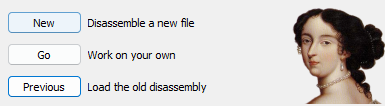

Analysing with IDA Pro
Launch IDA Pro and click on "New"
Next, navigate to your Fortnite installation directory, then go to FortniteGame\Binaries\Win64 and select "FortniteClient-Win64-Shipping.exe".
Wait for the process to complete.
Last modified: 17 mars 2024